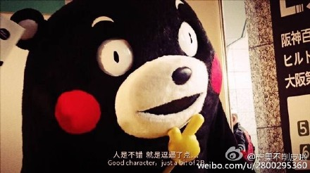
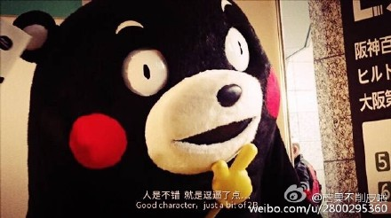

我的名字叫工藤新一，不，现在叫江户川柯南，原本是个名侦探，不幸被歹徒灌下毒药而变小。
我的名人名言是：
身体虽然缩小了，头脑还是一样的好。无论如何，真相只有一个！
我的身体已经缩小了！要是让他们知道工藤新一还活着，不但我性命难保，还会危害到我周遭的亲人。在阿笠博士建议下，我隐瞒了身份。当小兰问及我的身份时，情急之下，我化名为江户川柯南。为了搜集那些家伙的情报，于是我便住进了父亲以侦探为业的小兰家中。但是这位叔叔却是个糊涂大侦探，看不下去的我于是便装成叔叔，利用我天生的推理能力解决了许多悬疑案件。而叔叔也拜我所赐成了名号越来越响的大侦探。而我现在却变回了一个小学生，还被迫跟同班同学的步美，元太与光彦组成少年侦探团。
接着就向大家介绍博士为我发明的道具，首先是手表型麻醉枪。透过瞄准器对准目标按下按钮就能发射麻醉针，能够在瞬间让人昏睡；接着是领结变声器。只要调整后方的转盘，不管是大人或是小孩，任何人的声音都可以模仿；接下来的道具是。。。。
身体虽变小，但头脑一样棒
 
